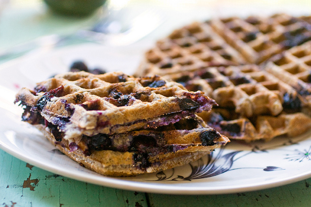
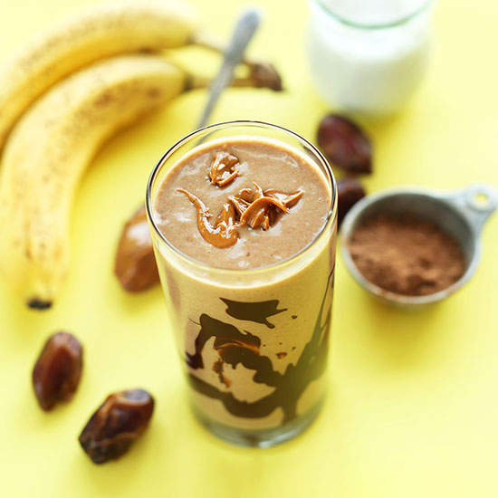

Do you have a sweet tooth but eat vegan? No worries. These two recipes are sure to
make you happy!
Below are the names, descriptions and a photo to identify each recipe.
-
Blueberry Oatmeal Waffles
Delicious vegan blueberry waffles made with whole wheat flour, oatmeal and
applesauce.
Figure: Blueberry Oatmeal Waffles

-
Chocolate Peanut Butter Banana Shake
A delicious and filling vegan breakfast shake you can take on the go!
Figure: Chocolate Peanut Butter Banana Shake
